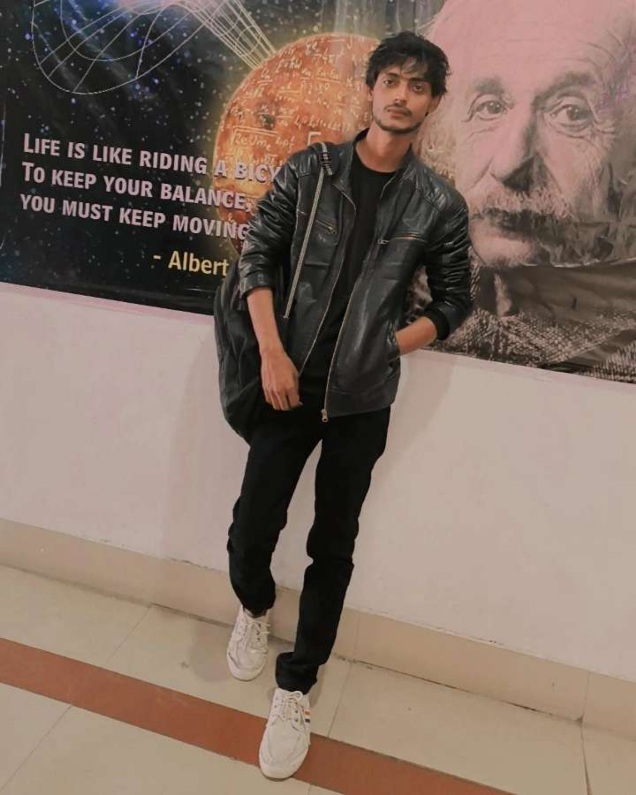

Aspiring Software Developer | Python Developer | Web Development Enthusiast
Download ResumeB.Tech (Information Technology) graduate with experience in Python, Web Development, SQL, JavaScript and Arduino-based systems.
Web Development Intern - Tech Intern Fly
May 2025 - June 2025 (Remote)
Arduino Uno, LDR Sensors, Servo Motors and Solar Panel based automated tracking system.
Console-based Python application for student record and result management.
Responsive portfolio website built using HTML, CSS and JavaScript.
B.Tech (IT), Veer Bahadur Singh Purvanchal University (2022–2026)
CGPA: 6.0/10
Email: razik8785@gmail.com
Phone: +91 9517151599